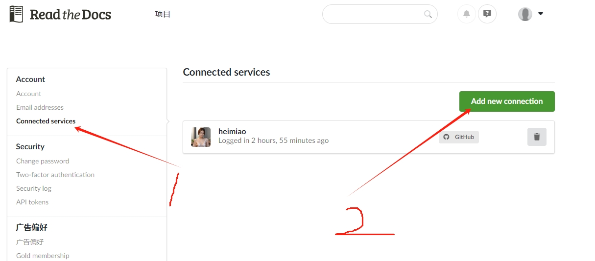
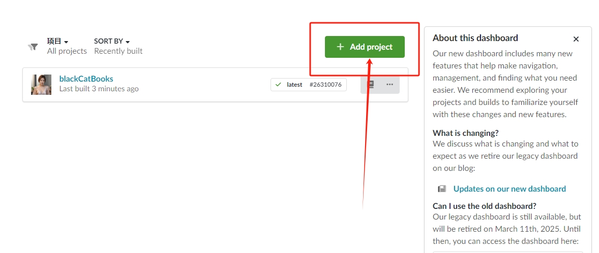
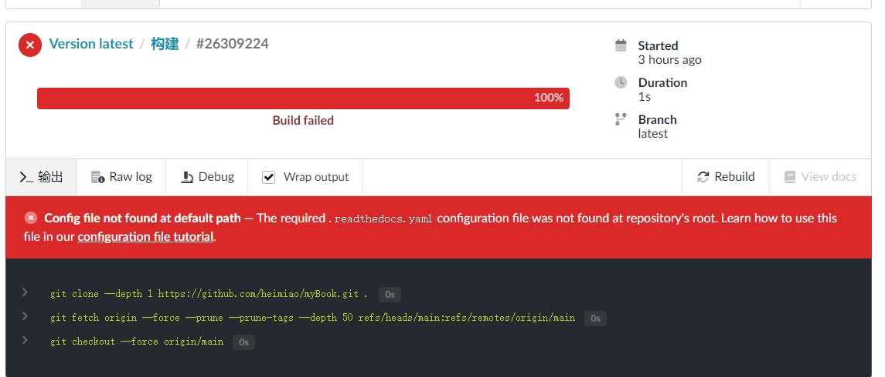
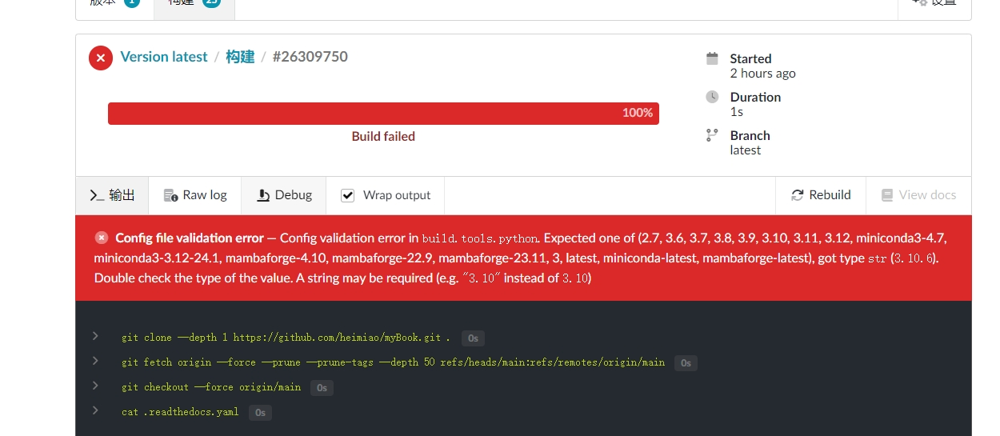
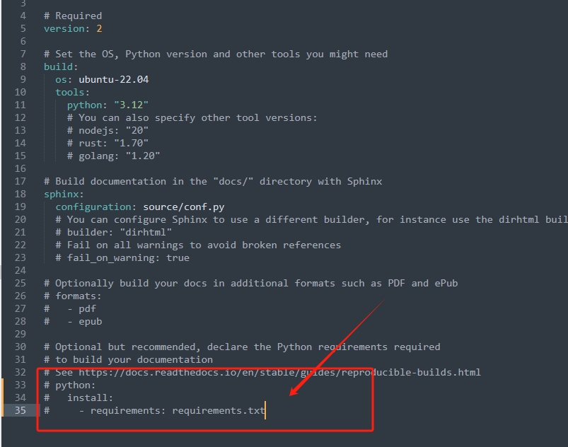
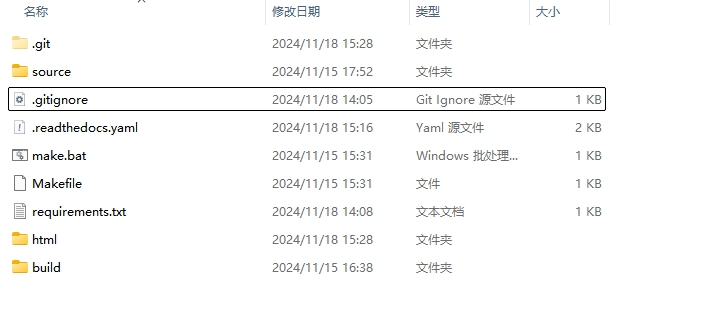

2. 文档托管
2.1. github上托管仓库
首先在github上创建仓库，比如myBook，然后建立本地仓库:
echo "# myBook" >> README.md
git init
git add README.md
git commit -m "first commit"
git branch -M main
git remote add origin https://github.com/maweichao2021/myBook.git
git push -u origin main
or
git remote add origin https://github.com/maweichao2021/myBook.git
git branch -M main
git push -u origin main
2.2. 注册ReadTheDocs
登录 readthebook 官网注册账号。
关联github仓库
注册成功以后需要关联对应的线上仓库，这样当你推送仓库的的时候`` readthebook ``会自动生成你想要的书籍，关联仓库如下图所示：
加载仓库下的置顶的项目
在 https://readthedocs.org/ 页面引入一个仓库：点击`import Project`按钮如下图所示

2.3. readthebook线上编译错误解决
缺少yaml文档
我第一次把github上的本项目导入进来的时候，编译报错如下图所示：
根据错误信息是缺少 .readthedocs.yaml 文件，这就比较坑爹了。我看别人的文档也没说加yaml配置文档啊，根据错误信息给的链接https://docs.readthedocs.io/en/stable/config-file/index.html 可知需要在项目的根目录下新增yaml配置项，在本地的根目录下新建 .readthedocs.yaml 文档，配置项直接拷贝官方的即可如下图所示：
yaml文档其实配置的是 readthebook 官方的服务信息，并不是我们本地的sphinx项目信息。到这里我们就可以愉快的编译了。你说尴尬不，又报错了，
build.tools.python错误
我把yaml文档配置加载进去了再次进行编译结果又翻车了，编译出错且提示找不到插件，报错信息如下：
我是没想到一个电子书弄这么坑爹▄█▀█●干嘛？？？？？？根据错误信息好像是python的安装那部分没有配置，如下图所示
很显然他想让线上服务安装插件依赖，我们回想下我们当时本地pip安装的所有插件都需要配置到这个 requirements.txt 文档里，通过该文档告知线上python安装这些些插件。
在项目根目录执行如下命令生成 requirements.txt ，这样ReadTheDocs会自动安装对应的插件依赖。
命令:
python3 -m pip freeze > requirements.txt
生成 requirements.txt 文件以后我们把安装的所有插件都拷贝到该文件里边如下图所示：
最终我的目录结构如下图所示：
最后将项目推送到github上，每次push代码到main分支后 ReadTheDocs 都会自动构建，下图是我第一本构建好的电子书：myBook